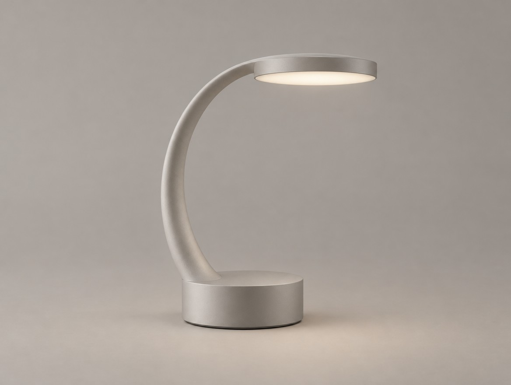
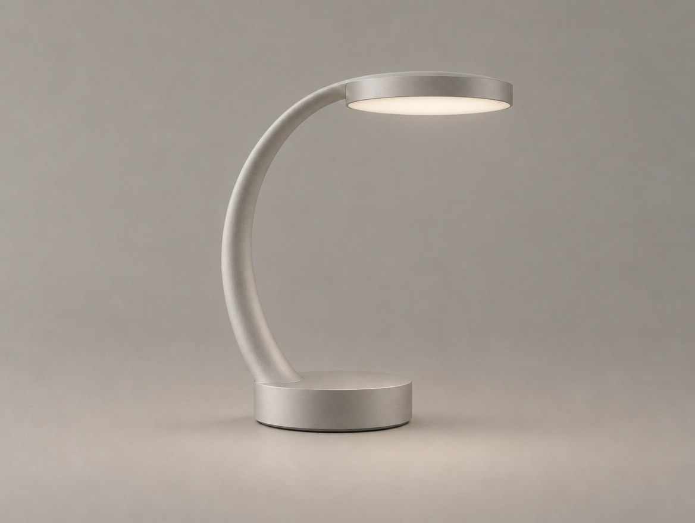
BEFORE SELECTED CONCEPT
1주차에 선택한 콘셉트
AFTER REFINED CONCEPT
베이스 비율과 연결부를 수정한 콘셉트
→
Week 02 — Online · AI × Industrial Design
From Selected Concept to Refined Concept
AI로 생성한 제품 콘셉트를 원하는 방향으로 수정하고 발전시킨다.
지난 시간에 무엇을 결정했을까?
FROM ANALYSIS TO EXECUTION
SELECTED CONCEPT
수정 전 기준 이미지
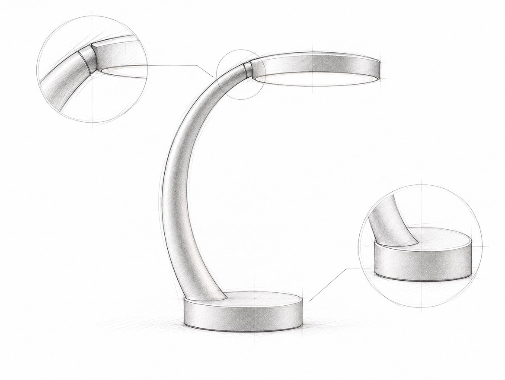
REVISION SKETCH
베이스와 연결부 수정 방향
FORM
형태와 비율 분석
FUNCTION
사용성과 사용자 행동 분석
STRUCTURE
연결부와 지지 구조 분석
REVISION
수정할 부분과 유지할 부분 결정
지난 수업에서 무엇을 수정할지 결정했다면, 오늘은 그 결정을 AI로 구현한다.
2
선택한 콘셉트는 최종 디자인이 아니다
SELECTED ≠ FINISHED
① 베이스가 무거워 보임
② 연결부가 모호함
③ 조작부가 보이지 않음
1주차에는 여러 방향 중 하나를 선택했다. 하지만 이런 문제가 남아 있을 수 있다.
01
형태의 비율이 적절하지 않음
02
사용 방식이 불분명함
03
부품의 연결 구조가 어색함
04
AI가 원하지 않은 요소를 추가함
05
실제 디자인 의도와 다른 부분이 존재함
질문
"여러분의 Selected Concept에서 가장 먼저 수정해야 하는 부분은 무엇인가요?"
3
문제를 지시로 바꾸기
TURN PROBLEMS INTO INSTRUCTIONS
DESIGN PROBLEM
"베이스가 너무 무거워 보인다."
→
EDITING INSTRUCTION
"원래 베이스의 지름은 유지하고 높이만 줄여 전체 비율을 개선한다."
DESIGN PROBLEM
"조명 헤드 연결이 어색하다."
→
EDITING INSTRUCTION
"지지대와 헤드 사이의 연결부를 명확하게 표현하되 헤드 형태는 유지한다."
DESIGN PROBLEM
"버튼을 찾기 어렵다."
→
EDITING INSTRUCTION
"베이스의 접근하기 쉬운 측면에 작은 전원 버튼을 배치한다."
문제를 발견하는 것과 AI에게 수정 방법을 지시하는 것은 다르다. "예쁘게 수정해줘"는 방향이 없다.
4
Practice 01
자신의 Design Revision Board를 열고 첫 번째 수정 계획을 씁니다.
작성할 내용
1. 가장 먼저 해결할 디자인 문제
2. 수정할 부위
3. 원하는 변경 사항
4. 반드시 유지할 특징
5. 성공 여부를 판단할 기준
작성 예시
PROBLEM 베이스가 지나치게 두껍다
CHANGE 베이스 높이를 약 20% 줄인다
KEEP 전체 실루엣, 지지대, 조명 헤드
SUCCESS 더 가벼워 보이면서 정체성 유지
결과물
First Editing Plan
5
새로 만들 것인가, 고칠 것인가
GENERATE OR EDIT?
GENERATION
새로운 디자인 방향을 탐색할 때
"곡선형 지지대와 원형 헤드를 가진 휴대용 조명을 디자인해줘."
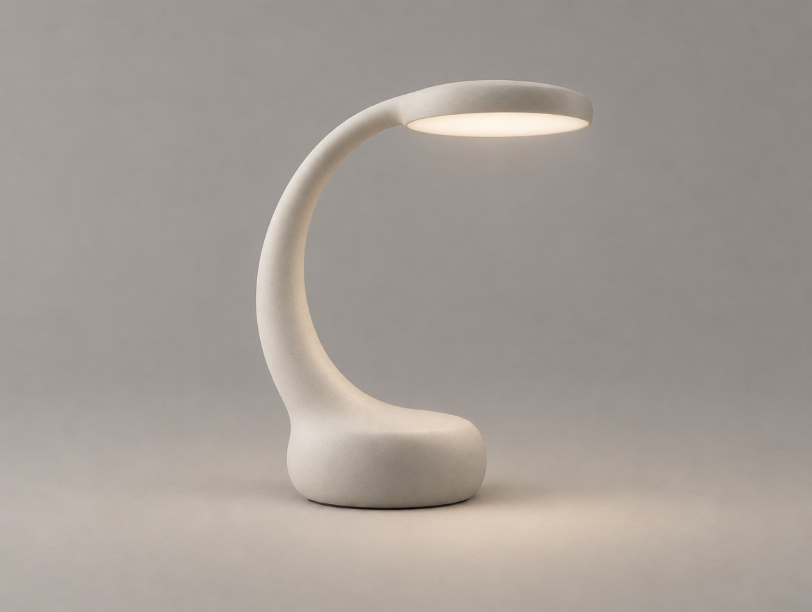
DESIGN 1
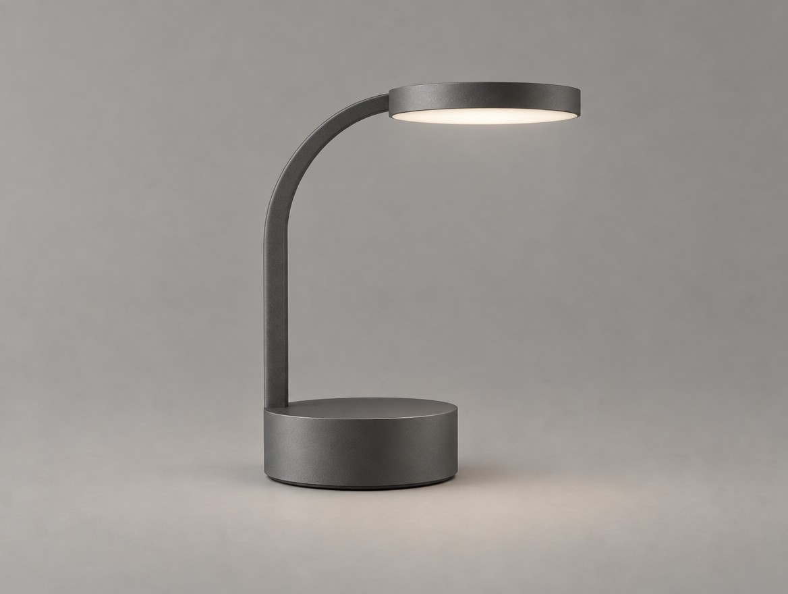
DESIGN 2
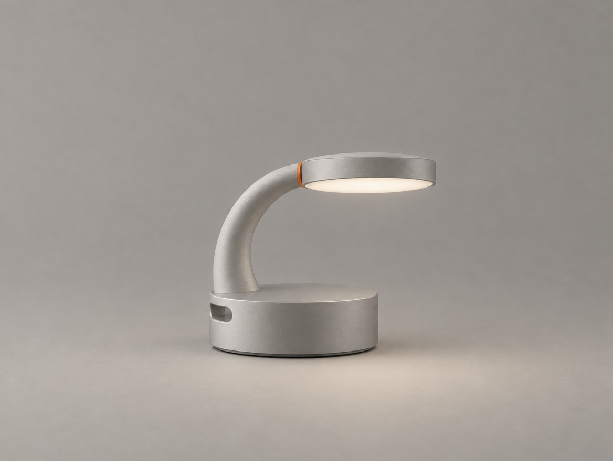
DESIGN 3
EDITING
기존 디자인의 특정 요소를 수정할 때
"현재 램프의 곡선형 지지대는 유지하고 베이스 높이만 줄여줘."
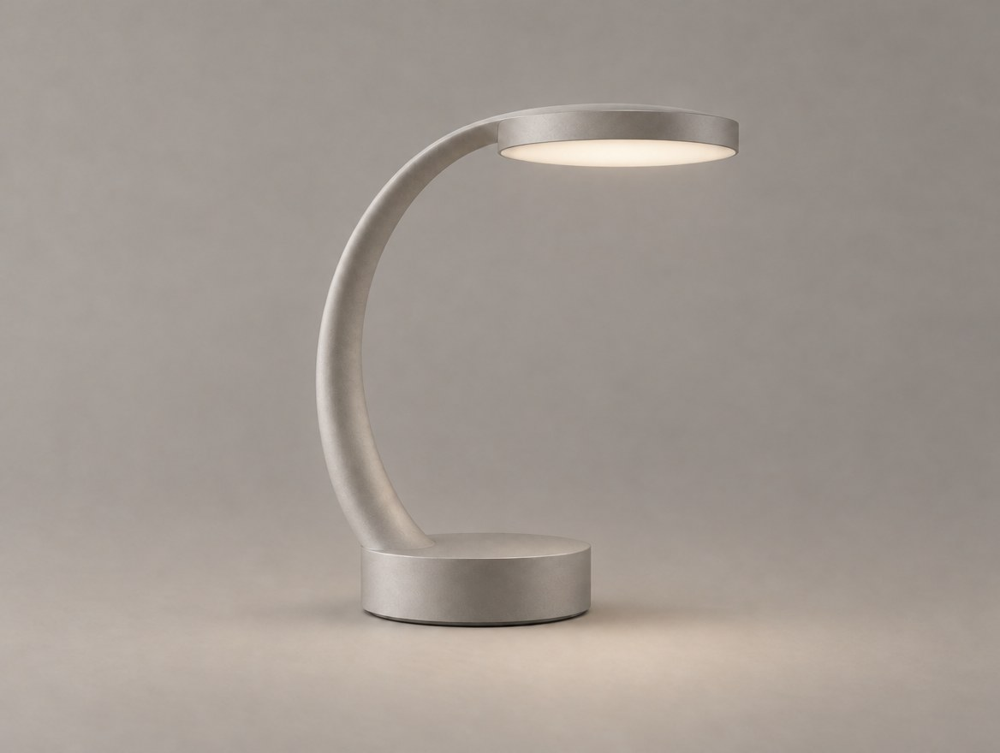
BASE A
BASE B
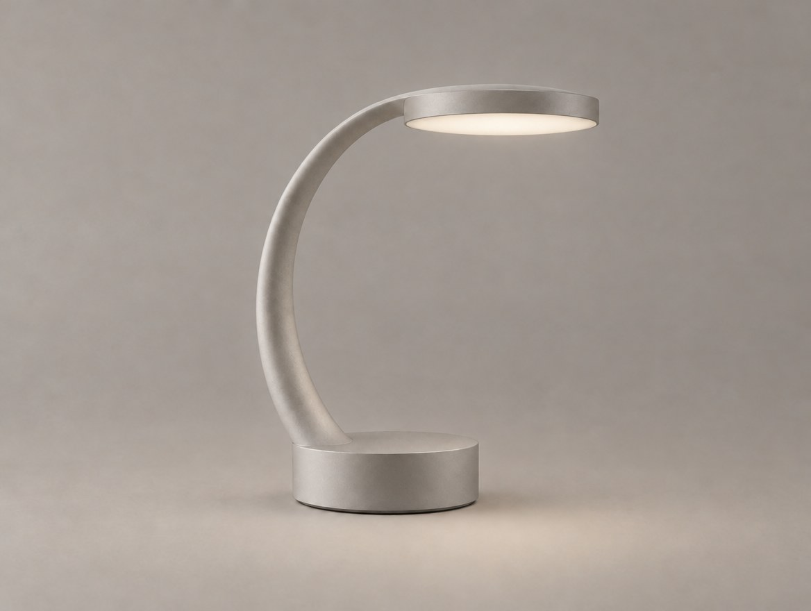
BASE C
이번 주에는 새 디자인을 만드는 것보다 기존 디자인을 유지하면서 개선하는 것이 중요하다.
6
변화를 통제하기
CONTROL THE CHANGE
KEEP
기존 디자인에서 유지해야 하는 요소
사례
· 곡선형 지지대
· 얇은 원형 헤드
· 매트 알루미늄 소재
CHANGE
이번 작업에서 수정할 요소
사례
· 베이스 높이 감소
CONSTRAINT
수정 과정에서 바뀌면 안 되는 조건
사례
· 카메라 시점 변경 금지
· 새로운 부품 추가 금지
· 헤드 크기 변경 금지
수정할 부분뿐 아니라 유지할 부분도 명확하게 전달해야 한다.
7
DEMO · 편집 프롬프트 구조
REFERENCE → KEEP → CHANGE → CONSTRAINT → OUTPUT
REFERENCE
수정할 기준 이미지
KEEP
유지할 형태와 특징
CHANGE
구체적인 수정 내용
CONSTRAINT
수정하지 않을 조건
OUTPUT
원하는 결과 이미지의 형태
각 부분이 결과에 어떤 영향을 주는지 하나씩 빼 보며 시연한다.
PROMPT · COPY
INPUT · MASTER_CONCEPT
Use the uploaded product image
as the primary design reference.
KEEP:
Preserve the original silhouette,
curved support arm,
thin circular lamp head,
and matte aluminum finish.
CHANGE:
Reduce the height of the cylindrical base
by approximately 20%.
Keep its diameter unchanged.
CONSTRAINT:
Do not change the curved support,
lamp head, overall product identity,
camera angle, or lighting.
OUTPUT:
A realistic industrial design product render
with the same composition and background.
8
구체적으로 말하기
BE SPECIFIC
VAGUE
"더 세련되게 만들어줘."
→
SPECIFIC
"지지대의 두께를 줄이되 기존 곡률을 유지해줘."
VAGUE
"비율이 이상하니까 수정해줘."
→
SPECIFIC
"헤드의 지름을 줄이고 베이스의 폭은 유지해줘."
VAGUE
"더 심플하게 만들어줘."
→
SPECIFIC
"기존 세 가지 주요 부품은 유지하고 추가 장식 요소만 제거해줘."
좋은 프롬프트는 긴 프롬프트가 아니라 수정 기준이 명확한 프롬프트다.
9
Practice 02
Design Revision Board에서 수정할 항목 2개를 골라 프롬프트로 바꿉니다.
항목마다 작성
REFERENCE
KEEP
CHANGE
CONSTRAINT
OUTPUT
실습 조건
두 수정 사항을
하나의 프롬프트에 합치지 않는다
→ 각각 별도의 프롬프트로
결과물
Editing Prompt 01
Editing Prompt 02
10
왜 다른 부분까지 바뀌었을까?
WHY DID EVERYTHING CHANGE?
ORIGINAL
기준 이미지
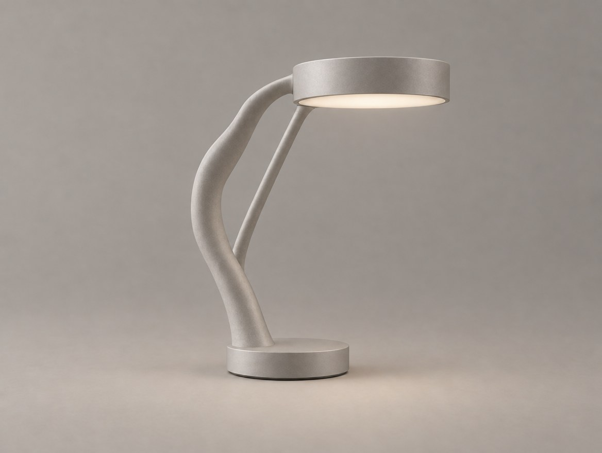
UNWANTED
FAILED EDIT
베이스는 얇아졌지만 지지대 · 헤드가 바뀌고 두 번째 지지대가 생김
이런 일이 자주 생긴다
· 베이스를 고쳤는데 지지대 곡률이 바뀜
· 연결부를 고쳤는데 헤드 형태가 달라짐
· 버튼을 추가했는데 소재가 바뀜
· 비율을 고쳤는데 카메라 시점이 달라짐
수정이 반영되었다는 사실만으로 성공한 편집은 아니다.
11
전체가 아니라 부분을 고친다
EDIT THE PART, NOT THE WHOLE
A · ORIGINAL
기준 이미지
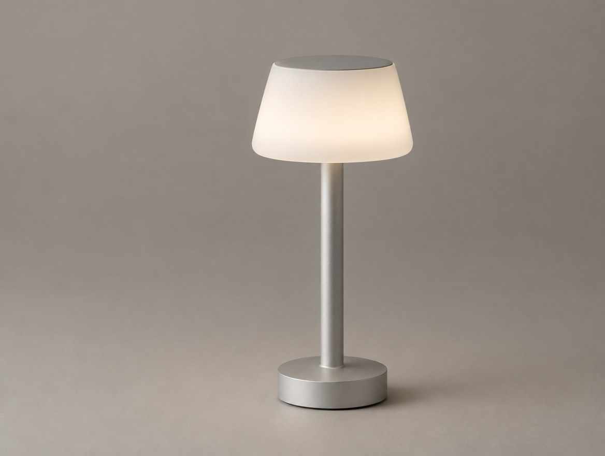
LOST
B · FULL REGENERATION
텍스트로 다시 생성 — 전혀 다른 제품
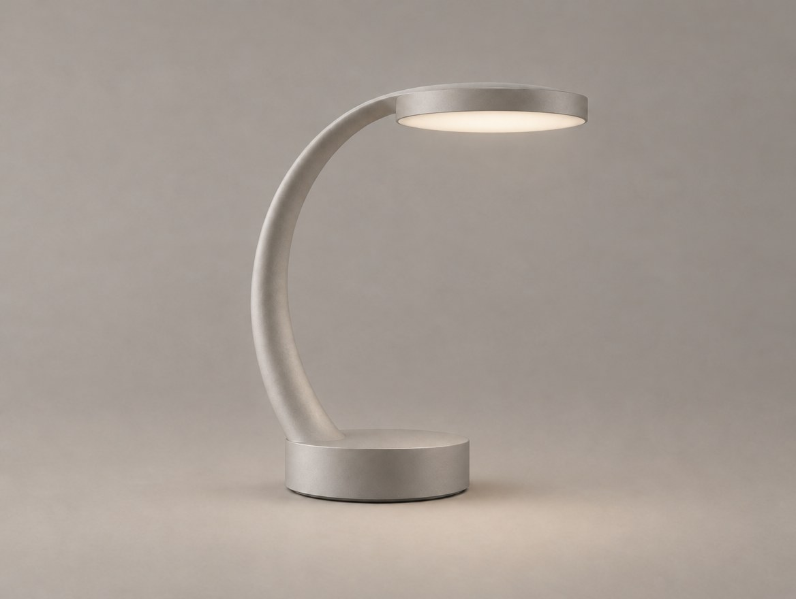
KEPT
C · TARGETED EDITING
기준 이미지 편집 — 베이스만 낮아짐
FULL REGENERATION
장점 다양한 형태 탐색에 유리
주의 기존 디자인이 크게 달라질 수 있음
LOCAL EDITING
장점 기존 디자인을 유지하며 특정 요소 수정에 유리
주의 수정 범위를 확인해야 하며 원본 보존이 완벽히 보장되지는 않음
12
한 번에 하나씩
ONE CHANGE AT A TIME
ORIGINAL
베이스가 지나치게 두꺼운 램프
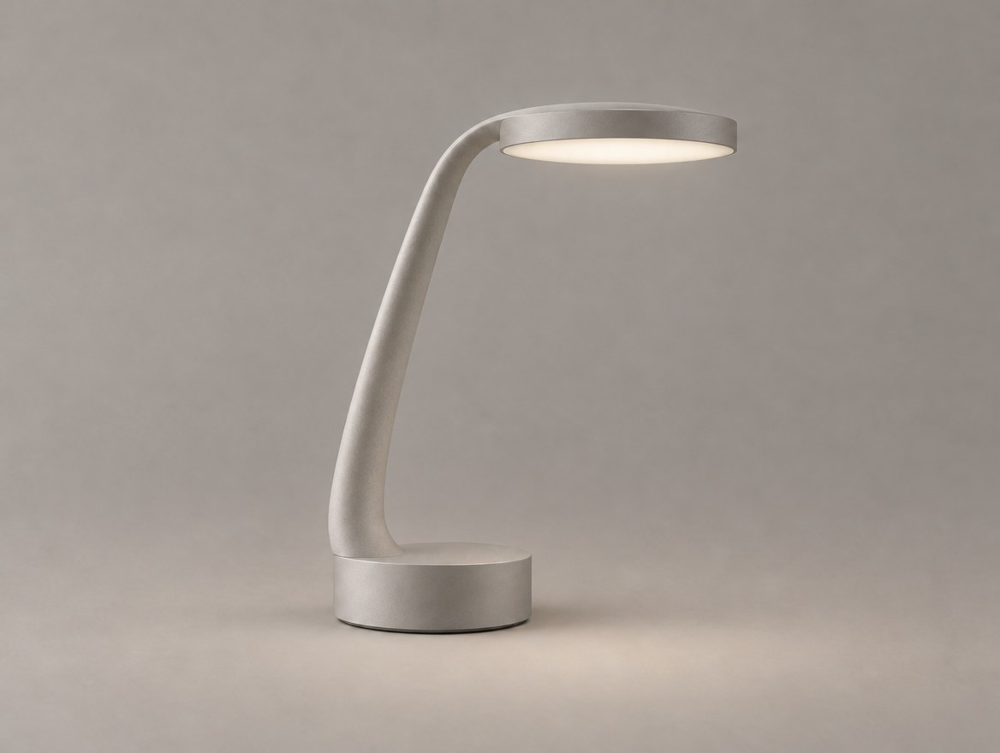
DRIFT
EDIT 01 → REVIEW
베이스 높이는 줄었지만 지지대 형태가 바뀜
KEPT
EDIT 02 → RESULT
원본 지지대를 유지하며 베이스 수정만 반영
BASE EDIT PROMPT · COPY
INPUT · MASTER_CONCEPT
Edit only the cylindrical base
of the uploaded table lamp.
Reduce the base height
by approximately 20%.
Keep the original base diameter.
Preserve the curved support arm,
lamp head geometry,
overall silhouette,
matte aluminum material,
camera angle,
lighting, and background.
Do not add or remove components.
The final result should look like
the same product with a thinner base.
13
DEMO · 원하지 않은 변화 바로잡기
CORRECT THE RESULT
01
REFERENCE 원본 이미지를 다시 기준으로 사용한다
02
SCOPE 수정할 영역을 더 좁게 지정한다
03
CONSTRAINT 유지할 요소를 더 명확하게 쓴다
04
SKETCH 필요하면 수정 스케치를 함께 넣는다
05
RESTART 오류가 누적되었다면 원본부터 다시 작업한다
UNWANTED
BEFORE
실패한 편집
KEPT
AFTER
원본 기준 · 조건 강화
결과 이미지를 다시 넣어 고치면 오류가 쌓인다. 망가진 결과보다 원본에서 다시 시작하는 편이 빠를 때가 많다.
14
DEMO · 스케치로 지시하기
DIRECT WITH A SKETCH
+
ORIGINAL + REVISION SKETCH + PROMPT →
SKETCH-GUIDED PROMPT · COPY
INPUT · MASTER + SKETCH
Use the original product image
as the primary reference.
Use the uploaded revision sketch
to guide the shape of the connection
between the curved support arm
and the circular lamp head.
Improve the joint geometry
to create a clearer and more coherent connection.
Preserve the overall product silhouette,
lamp head diameter,
base proportions,
and matte aluminum material.
Do not redesign unrelated components.
Maintain the original camera angle,
lighting, and background.
Realistic industrial design concept rendering.
텍스트로 설명하기 어려운 형태에 쓴다 — 연결부 형태 · 지지대 곡률 · 버튼 위치 · 비율 · 연결 방향
15
Practice 03
가장 중요한 수정 사항 하나를 실제로 편집합니다.
작업 단계
1. Selected Concept 업로드
2. 가장 중요한 수정 사항 하나 선택
3. KEEP / CHANGE / CONSTRAINT 작성
4. Higgsfield에서 이미지 수정
5. 원본과 결과 비교
6. 원하지 않은 변경 시 다시 수정
체크리스트
수정 목표가 반영되었는가?
기존 실루엣이 유지되었는가?
핵심 부품이 변경되지 않았는가?
새로운 오류가 생기지 않았는가?
결과물
First Revised Concept
16
통제된 변주
CONTROLLED VARIATION
같은 디자인 문제에 대해 하나의 변경 조건만 조절하면서 여러 수정안을 비교한다. 단순히 이미지 세 장을 만드는 것이 아니다.
VARIATION A
VARIATION B
VARIATION C
PRODUCT
기준 제품
MATERIAL
소재
LIGHT
조명
VIEW
카메라 시점
BACKGROUND
배경
OTHER PARTS
수정하지 않을 부품
17
비교할 것만 비교한다
COMPARE WHAT MATTERS
RANDOM VARIATION
· 제품 형태가 서로 다름
· 소재가 서로 다름
· 카메라 각도가 다름
· 비교 기준이 불명확함
CONTROLLED VARIATION
· 동일한 기준 제품
· 동일한 소재와 시점
· 하나의 변경 변수
· 수정 효과를 비교할 수 있음
18
하나의 변수, 세 가지 선택지
ONE VARIABLE, THREE OPTIONS
PROBLEM
베이스가 너무 두꺼워 보인다.
VARIABLE
BASE HEIGHT — 베이스 높이
A — SLIM
베이스 높이를 크게 줄인 안
B — BALANCED
베이스 높이를 적당히 줄인 안
C — ORIGINAL-LIKE
기존 높이에서 조금만 줄인 안
한 번의 비교에서는 가능한 한 하나의 변수를 중심으로 수정한다.
19
DEMO · 같은 원본에서 A / B / C
EXPLORE THE SOLUTION
A · SLIM
요청 약 30% → 실제 약 20% 낮아짐
B · BALANCED
요청 약 20% → 실제 약 10~15%
C · SUBTLE
요청 약 10% → 실제 약 10~15% · B와 거의 같음
주의
프롬프트의 수치가 이미지에 정확히 반영되지 않는다. 이 시연에서도 B와 C는 거의 같게 나왔다. 결과를 직접 비교해 실제 변화량과 다른 요소의 보존 여부를 확인한다.
실제 변화량은 슬라이드 제작 시 베이스 측면 높이를 눈대중으로 비교한 값
PROMPT B · COPY
INPUT · MASTER_CONCEPT
Edit the uploaded table lamp.
Create Variation B:
A moderately slimmer cylindrical base.
Reduce the base height by approximately 20%.
Preserve the original base diameter,
curved support arm,
circular lamp head,
material, camera angle, and lighting.
Change only the base height.
Do not redesign the product.
A · C는 두 줄만 바꾼다
A noticeably slimmer · approximately 30%
C subtly slimmer · approximately 10%
20
기준으로 비교하기
COMPARE WITH CRITERIA
01
DESIGN INTENT
원래 디자인 목표에 부합하는가?
02
PROPORTION
전체 비율이 개선되었는가?
03
CONSISTENCY
원본 디자인 정체성이 유지되었는가?
04
USABILITY
사용성에 부정적인 영향은 없는가?
05
STRUCTURE
구조적으로 더 설득력 있는가?
06
ARTIFACTS
원하지 않은 AI 오류가 없는가?
가장 보기 좋은 이미지보다 수정 목표에 가장 적합한 이미지를 고른다.
21
Practice 04
하나의 수정 변수로 A / B / C 세 안을 만들고 비교합니다.
작업 단계
1. 하나의 수정 변수 선택
2. A / B / C의 차이 정의
3. 같은 원본 이미지로 생성
4. 세 안을 나란히 배치
5. 유지 조건 확인
6. 가장 적합한 안 선택
확인할 것
세 안이 같은 원본에서 나왔는가?
변수 외의 조건이 같은가?
실제 변화량이 서로 구분되는가?
결과물
Controlled Variation Board
22
보기 좋은 것이 더 좋은 디자인은 아니다
BETTER LOOKING ≠ BETTER DESIGN
A · 가장 날렵해 보인다
그런데 헤드를 받치기에 충분해 보이는가?
B · 덜 극적이다
그런데 정체성과 안정감이 더 유지되는가?
01
처음 해결하려던 문제가 개선되었는가?
02
제품의 핵심 정체성이 유지되었는가?
03
사용 방식이 더 명확해졌는가?
04
새로운 구조적 문제가 생기지 않았는가?
05
AI가 원하지 않은 요소를 추가하지 않았는가?
질문
"여러분이 선택한 안은 왜 다른 안보다 좋은가요?"
23
A / B / C 평가표
EVALUATE A/B/C
평가 기준
A · SLIM
B · BALANCED
C · SUBTLE
수정 목표 달성
좋음
보통
미흡
원본 형태 유지
보통
좋음
좋음
비율 개선
좋음
좋음
미흡
사용성
보통
좋음
좋음
구조적 설득력
보통
좋음
좋음
추가 오류
없음
없음
없음
좋음 · 보통 · 미흡으로 표시하고,
점수보다 선택 이유를 문장으로 쓴다.
아래 표는 램프 예시의 평가 예
24
반복해서 다듬는다
GENERATE → EVALUATE → DIRECT → REFINE
01
GENERATE →
02
EVALUATE →
03
DIRECT →
04
REFINE
EDIT 01 베이스 두께 개선
EVALUATE 전체 비율은 좋아졌지만 연결부가 여전히 어색함
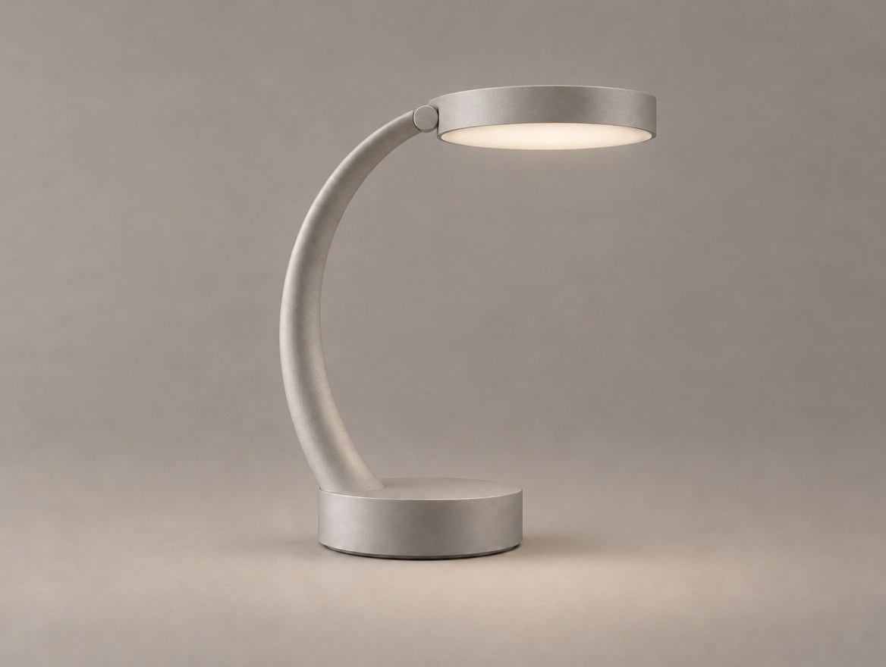
DRIFT
EDIT 02 연결부 수정
EVALUATE 연결부는 개선되었지만 헤드가 두꺼워짐
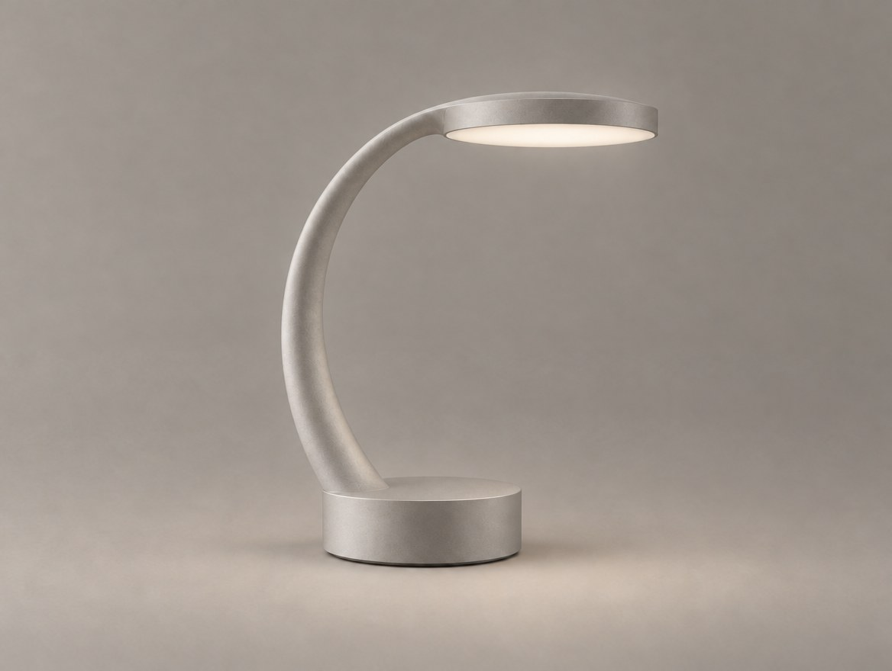
KEPT
EDIT 03 · FINAL 헤드 복원 · 연결부 유지
EVALUATE 수정 목표를 만족하는 개선 이미지
매번 새 이미지를 만드는 것이 아니라, 이전 결과를 검토하며 수정한다.
25
DEMO · 선택안에서 최종 콘셉트로
FROM VARIATION TO REFINED CONCEPT
SELECTED · VARIATION B
선택한 수정안 — 베이스 비율 개선
→
FINAL REFINEMENT
연결부만 추가로 정리
시연 순서
1. A/B/C 중 가장 적합한 안 선택 2. 추가로 개선할 부분 하나 결정
3. 선택한 결과를 기준으로 추가 편집 — 좋아진 부분은 KEEP으로 옮긴다
FINAL REFINEMENT · COPY
INPUT · VARIATION B
Refine the uploaded table lamp design.
Preserve the improved cylindrical base proportions,
original curved support arm,
thin circular lamp head,
and matte aluminum finish.
Improve only the connection
between the curved support arm
and the lamp head.
Create a cleaner and more coherent joint
without changing the overall silhouette.
Do not alter the base proportions,
lamp head diameter,
material, camera angle,
lighting, or background.
Produce a realistic industrial design
concept rendering of the same product.
26
Practice 05
A / B / C 중 최적안을 골라 최종 콘셉트로 다듬습니다.
작업 단계
1. A / B / C 중 최적안 선택
2. 선택 이유 작성
3. 추가 수정 사항 하나 결정
4. AI로 추가 수정
5. 원본과 최종 결과 비교
6. 남아 있는 문제 정리
완료 기준
원래 디자인의 핵심 특징이 유지됨
주요 수정 목표가 반영됨
수정 전후의 차이를 설명할 수 있음
추가 검토가 필요한 부분을 파악함
결과물
Final Refined Concept
27
실제로 무엇이 좋아졌나?
WHAT ACTUALLY IMPROVED?
ORIGINAL
Selected Concept
REFINED
Refined Concept
설명할 것
어떤 문제를 수정했는가?
무엇을 유지했는가?
결과가 어떻게 달라졌는가?
아직 해결되지 않은 부분은?
28
최종 제출물
DESIGN REFINEMENT BOARD
01 ORIGINAL CONCEPT
수정 전 Selected Concept
02 REVISION PLAN
KEEP 지지대 · 원형 헤드 · 소재
CHANGE 베이스 높이
CONSTRAINT 시점 · 헤드 크기 · 부품 수
KEEP / CHANGE / CONSTRAINT
03 FIRST EDIT
첫 번째 수정 결과
04 VARIATION A / B / C
하나의 변수 · 세 가지 수정안
05 SELECTION
선택 B · BALANCED
이유 목표와 정체성의 균형
기준 비율 · 일관성 · 오류
최종안 선택 이유
06 REFINED CONCEPT
최종 개선 이미지
07 BEFORE / AFTER
같은 크기 · 같은 구도 비교
08 REMAINING ISSUES
01 조작부 위치는 아직 미정
02 연결부 회전 여부 검토
03 3주차 CMF에서 마감 결정
추가 검토가 필요한 부분
29
REFINED CONCEPT → CMF & DETAIL
NEXT WEEK
이번 주에는 제품의 형태 · 비율 · 연결부를 개선했다.
다음 주에는 개선한 제품을 기준으로 다음을 발전시킨다.
Color
Material
Finish
Product Detail
Multi-view Consistency
Don't change everything. Change what matters.
30